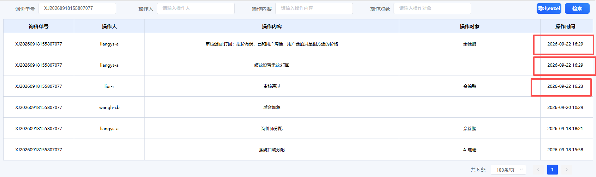

问题描述：麻烦看下这个单，因为昨天 16:23刘蕊那边审核通过了，但是我这边昨天显示页面还是待审核，我在16:29时还能打回给询价师，这个单有系统是不是有问题
问题定位：16:23 的"审核通过"是真实生效的（系统里记录了该单 09-22 16:23:47 首次审核通过）。你在 16:29 看到的"待审核"是页面未刷新前的旧状态；基于旧页面提交的"打回"本应被系统拒绝，但系统没有做这个校验，于是把已经审核通过的材料退回了。审核状态并发冲突。用户A打回订单后，用户B在旧页面（缓存状态）操作通过，系统在执行“审核通过”时未实时校验最新状态，导致已打回的订单被错误覆盖为通过。
需求内容：审核操作时，需要实时查询当前的 审核状态，若当前状态不等于 “待审核”，则允许修改，否则不允许本次操作。 系统提示：存在已审核的状态，无法修改！